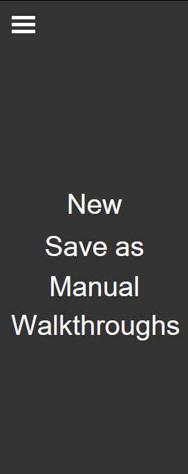

The
editor navigation
provides central controls for the editor.
- The
new
button initialises a new image in the editor, deleting all existing layers.
- The
save as
button allows for the image currently in the editor to be downloaded. Clicking the button prompts the user for a file name, and then the image is downloaded with the given file name in the browser.
- Manual
links to the user manual.
- Walkthroughs
links to the
editor walkthroughs.